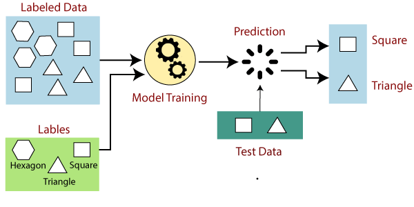

Introduction to machine learning

Introduction: How to think about machine learning?
Imagine you have a super-smart robot friend named RoboBrain. RoboBrain loves to learn new things and make predictions about the world, just like humans do. But instead of using intuition or experience like we do, RoboBrain learns from data!
RoboBrain’s superpower is that it can look at a bunch of examples and figure out hidden patterns. Let’s say you want to teach RoboBrain to recognize cats. You start by showing it pictures of cats and telling it, “Hey, these are cats!”
At first, RoboBrain might not know what makes a cat a cat. But it’s a curious robot, so it starts looking for clues in the pictures. It looks at the shapes of the ears, the size of the eyes, the pointiness of the whiskers, and many other things.
RoboBrain collects all these clues and tries to create a set of rules that define a cat. It might say, “If the ears are pointy, and the eyes are big, and the whiskers are long, then it’s probably a cat!”
But here’s the fun part: RoboBrain wants to make sure its rules work well, not just for the cats it has seen before, but for new cats it has never encountered. So it asks you to find more pictures of cats and some pictures of other animals too. This way, it can test its rules and see how accurate they are.
Based on the results, RoboBrain adjusts its rules and tries to improve its accuracy. It might realize that some clues are more important than others. For example, it might find out that pointy ears are a strong indicator of a cat, while the color of the fur doesn’t matter much.
This process of learning from examples and improving is called machine learning. RoboBrain is using the pictures as training data to learn how to recognize cats. The rules it creates are like a model of a cat.
Once RoboBrain has trained enough, you can give it a new picture, and it will tell you whether it’s a cat or not. How cool is that? RoboBrain has learned from the data to become a cat expert!
But remember, RoboBrain can learn many things, not just about cats. It can learn to predict stock prices, recommend movies, detect spam emails, and so much more.
What is machine learning?

Machine learning is a field of artificial intelligence that focuses on creating algorithms and models that allow computers to learn and make predictions or decisions without being explicitly programmed. It involves developing systems that can automatically learn and improve from experience or data, rather than following fixed instructions.
The primary goal of machine learning is to enable computers to recognize patterns, make accurate predictions, or take actions based on input data. Rather than following explicit instructions, machine learning algorithms are designed to learn from examples and iteratively improve their performance over time.
The process of machine learning typically involves the following steps:
Data collection: Gathering and preparing relevant data, which can include text, images, audio, numerical values, etc., depending on the specific problem.
Data preprocessing: Cleaning and transforming the data into a suitable format for the learning algorithm. This step often involves tasks such as removing noise, handling missing values, and normalizing the data.
Feature extraction: Identifying and selecting the most informative features from the data. Features are the measurable aspects or attributes that represent the input data and are used to make predictions.
Model selection: Choosing an appropriate machine learning model or algorithm that best fits the problem at hand. Different models have different strengths and are suited for different types of data and tasks. Examples of popular machine learning models include decision trees, support vector machines, and neural networks.
Training: Using the prepared data to train the chosen model. During training, the model learns to identify patterns and relationships within the data by adjusting its internal parameters based on the provided examples.
Evaluation: Assessing the performance of the trained model on a separate set of data called the test set. This step helps estimate how well the model will perform on new, unseen data.
Deployment: Once the model demonstrates satisfactory performance, it can be deployed to make predictions or take actions on new, unseen data. This is often done in real-time applications where the model interacts with users or other systems.
We have already covered data collection and data prepossessing in this course, and now we are moving on to next steps – we will be learning about different machine learning models, starting with the basic models, like OLS and moving on to move complex models – all of which can be categorized as machine learning.
There are two categories of machine learning or machine learning models, supervised machine learning and unsupervised machine learning.
Supervised machine learning

In supervised learning, we provide the computer with labeled examples or training data. In other words, we provide the data and the variables to which the model will be built. The training data consists of input data (features) paired with corresponding output or target values. The goal is to train a model that can learn from these variables and make accurate predictions or classifications on new, unseen data.
During supervised learning, the model learns the patterns and relationships between the input data and the corresponding outputs – or if you will the independent and the independent variables. It tries to map the input features to the correct output based on the provided examples. The model’s performance is evaluated by comparing its predicted outputs to the true outputs from the labeled data. We will be left with a percentage of how accurate the predictions are.
Supervised learning is commonly used for tasks such as classification (assigning input data to predefined categories) and regression (predicting continuous numerical values). Examples include email spam detection, image recognition, and predicting housing prices.

Unsupervised machine learning
In unsupervised learning, we work with unlabeled data, meaning there are no predefined output or target values. The objective is to discover hidden patterns, structures, or relationships within the data without any explicit guidance.
Unsupervised learning algorithms analyze the input data and identify inherent patterns or clusters based on statistical properties or similarities between data points. The goal is to uncover meaningful insights or information about the data itself.
Without labeled data, the model explores the data independently, finding similarities or differences between data points. It can uncover clusters of similar data or identify anomalies that deviate from the norm. Unsupervised learning is often used for tasks such as customer segmentation, data compression, and anomaly detection.

Unlabeled data?? Unlabeled data refers to data that does not have any predefined or known output or target values associated with it. Unlike supervised learning, where the training data is labeled with corresponding target values, unsupervised learning works with raw, unannotated data.
Unlabeled data consists only of input data or features. For example, if you have a collection of images, the images themselves would be the unlabeled data. There is no additional information provided that indicates what objects or patterns are present in the images.
The absence of labels in unsupervised learning means that the algorithm or model does not have prior knowledge about how the data should be categorized or what patterns it should look for. The goal is to discover inherent structures, relationships, or patterns within the data solely based on its intrinsic properties.
Unsupervised learning algorithms analyze the unlabeled data and automatically identify similarities, differences, clusters, or other underlying structures. By finding commonalities or patterns in the data, these algorithms can group similar data points together or uncover interesting insights about the data distribution.
Summary
Machine learning refers to models that learn and make predictions based on input data. Usually we distinguish between supervised and unsupervised machine learning. Where supervised machine learning are models where we specify the relationship between different variables, or we know the different labels. For example, we tell the model this is cats and this is dogs, and then we ask the model to distinguish between cats and dogs not just based on the data we give the model, but also new and unseen data. In unsupervised learning, the model will look for patterns in the data without any predefined labels, like for example cats and dogs.